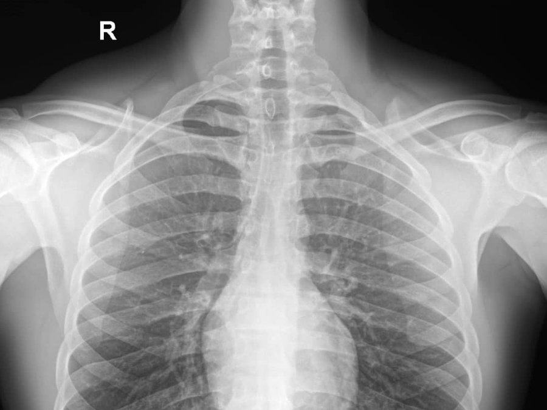

Clear images. Accurate diagnoses. Care you can trust.
Ultrasound, X-ray and laboratory services, interpreted by experienced consultant radiologists and delivered with prompt, compassionate care.
Book Appointment- 6Service areas
- 10+Procedures offered
- 100%Consultant interpreted
Obstetric & Gynecological Ultrasound
Radiation-free scans for women's health, pregnancy care and fertility workups, done on advanced consoles with HD multi-frequency probes.
-
Pelvic ultrasound (TAS & TVS)
A clear look at the uterus, ovaries and pelvisPelvic ultrasound uses sound waves to image the womb, ovaries and surrounding structures. A transabdominal scan (TAS) is done over the lower belly. A transvaginal scan (TVS) uses a slim probe for a closer, more detailed view. Many patients have both in one visit, and we decide which is needed based on your doctor's request.
- Commonly used for
- Pelvic pain, irregular or heavy periods, fibroids, ovarian cysts, early pregnancy confirmation and checking the position of an IUCD.
- Before your visit
- TAS usually needs a comfortably full bladder, while TVS is done with an empty bladder. We will guide you on the day.
-
Follicular tracking & ovulation monitoring
Know when you are most likely to ovulateA series of short scans across your cycle that measure the growth of the follicles in your ovaries and the thickness of the womb lining. This shows if and when an egg is released, so intercourse or treatment can be timed properly.
- Commonly used for
- Couples trying to conceive, irregular cycles, and monitoring during fertility treatment.
- Before your visit
- Scans usually start in the first half of your cycle and are repeated every few days. Bring any earlier scan reports and note the first day of your last period.
-
3D/4D obstetric scans & fetal well-being profiles
See and check on your babyA fetal well-being profile looks at your baby's growth, heartbeat, position, the amount of amniotic fluid and the placenta. 3D and 4D scans add lifelike surface images and movement, giving you a closer view of your baby.
- Commonly used for
- Routine pregnancy checks, growth monitoring, confirming due dates and keepsake images.
- Before your visit
- Bring your antenatal card and any earlier scans. Drink water as advised and wear a two-piece outfit so the belly is easy to reach.
-
Sonohysterography (SIS)
A detailed ultrasound of the inside of the wombSterile saline is gently passed into the womb through a thin catheter while an ultrasound is done. The fluid opens the cavity so the lining and any growths show clearly. You may feel mild cramping, which usually settles quickly.
- Commonly used for
- Infertility work-ups, abnormal bleeding, suspected polyps, fibroids inside the womb cavity and adhesions.
- Before your visit
- Usually booked after your period ends and before ovulation. It is not done during pregnancy or an active pelvic infection, so tell us if either applies.
General Diagnostic Ultrasound
Non-invasive scanning for a wide range of everyday diagnostic questions, reported by consultant radiologists.

-
Abdominal & pelvic
Organs of the abdomen and pelvis in one visitA real-time scan of the liver, gallbladder, pancreas, spleen, kidneys, bladder and, depending on the patient, the womb, ovaries or prostate. It shows size, shape and texture, and picks up stones, fluid and masses.
- Commonly used for
- Abdominal pain, jaundice, kidney or gallstones, urinary problems, bloating and follow-up of known conditions.
- Before your visit
- Often a few hours of fasting for the upper abdomen and a full bladder for the pelvis. Confirm the exact preparation when you book.
-
Small parts (thyroid, scrotal, breast)
Close-up imaging of superficial structuresHigh-frequency probes give very sharp pictures of structures close to the skin. Thyroid scans assess lumps and nodules, scrotal scans look at pain, swelling or lumps, and breast scans help assess lumps or changes.
- Commonly used for
- Neck swellings, thyroid nodules, testicular pain or swelling, breast lumps and pain.
- Before your visit
- Usually none. Wear clothing that is easy to adjust around the area being scanned.
-
Musculoskeletal (MSK)
Muscles, tendons, ligaments and jointsUltrasound shows soft tissues as they move, so the area can be scanned while you flex or stretch it, and compared with the other side. It picks up tears, tendon inflammation, joint fluid and soft tissue lumps.
- Commonly used for
- Shoulder, knee, ankle and wrist pain, sports injuries, swelling and suspected tendon or muscle tears.
- Before your visit
- No special preparation. Bring any previous scans or X-rays of the same area.
Vascular & Doppler
Color Doppler studies that show how blood flows through your vessels.
-
Arterial & venous color Doppler
How blood flows through the arms and legsColor Doppler adds blood flow to the ultrasound picture. It shows whether veins and arteries are open, whether blood is flowing in the right direction and whether there are clots or narrowing.
- Commonly used for
- Leg swelling or pain, suspected deep vein thrombosis, varicose veins, cold or painful limbs and poor circulation.
- Before your visit
- Usually none. Wear loose clothing that is easy to roll up.
-
Carotid & renal Doppler
Blood flow in the neck and kidney vesselsCarotid Doppler checks the large arteries in the neck that supply the brain for narrowing or plaque. Renal Doppler studies the blood vessels of the kidneys, which can be a cause of high blood pressure.
- Commonly used for
- Dizziness, a history of stroke or mini-stroke, high blood pressure that is hard to control and kidney concerns.
- Before your visit
- Carotid scans need no preparation. Renal scans often need a few hours of fasting, so confirm when you book.
Painless HSG
Gentle X-ray imaging of the womb and fallopian tubes, performed by a consultant radiologist for fertility work-ups.
-
Painless HSG
Imaging of the womb and fallopian tubesHysterosalpingography (HSG) uses X-ray and a contrast dye passed through the cervix to outline the womb and show whether the fallopian tubes are open. It is performed by a consultant radiologist, assisted by radiographers, using a gentle technique to keep you as comfortable as possible, though some people feel mild cramping.
- Commonly used for
- Infertility work-ups, repeated miscarriage and checking the shape of the womb.
- Before your visit
- Usually scheduled soon after your period ends and before ovulation. Tell us if you could be pregnant or have a pelvic infection. We will explain any medication to take beforehand.
X-ray & Contrast Studies
Digital X-ray and contrast studies that outline the chest, bones, digestive tract and urinary system.

-
Digital radiography (X-ray)
Fast, sharp X-ray images of the chest and bonesDigital X-ray captures images straight to a computer, so results are clear, ready within minutes and easy to share with your doctor. It is used to look at the chest, bones, joints and other body areas.
- Commonly used for
- Cough or chest problems, suspected fractures, joint pain and follow-up of known bone or chest conditions.
- Before your visit
- Usually none. You may be asked to remove metal items from the area being imaged. Tell us if you could be pregnant.
-
Barium & contrast studies
X-ray studies that outline the digestive tractYou drink or receive a contrast liquid that shows up on X-ray, so the radiologist can watch it move through the gullet, stomach or bowel. This highlights ulcers, blockages, narrowing and unusual movement.
- Commonly used for
- Difficulty swallowing, persistent stomach or bowel symptoms and suspected obstruction.
- Before your visit
- Preparation depends on the study. Some need fasting, and bowel studies may need a cleansing routine. We will tell you exactly what to do.
-
MCUG, fistulography & sialography
Specialist contrast proceduresMCUG (micturating cystourethrogram) looks at the bladder and urethra, with X-ray pictures taken while you pass urine. Fistulography follows the path of a fistula by filling it with contrast. Sialography outlines the salivary ducts to find stones or blockages.
- Commonly used for
- Recurrent urine infections and reflux, draining tracts or fistulas, and dry mouth or swelling of the salivary glands.
- Before your visit
- Preparation depends on the procedure. Please book ahead so we can explain the steps, especially for children.
Clinical Laboratory
Automated laboratory diagnostics, done alongside your imaging so your doctor gets the full picture from one centre.
-
Clinical laboratory
Automated lab tests paired with your imaging reportsLaboratory diagnostics are done alongside your imaging, so your doctor gets the full picture from the same centre. Samples such as blood and urine are processed on modern automated devices, as requested by your doctor.
- Commonly used for
- Routine screening, follow-up of known conditions and tests that support what the scan shows.
- Before your visit
- Some tests need fasting. Bring your doctor's request and ask our team which preparation applies.
Simple from start to finish
Bring your doctor's request and any previous scan reports. Exact preparation can differ by procedure, so confirm with us when you book.
-
1
Book
Message us on WhatsApp or call the branch nearest you and tell us which scan you need.
-
2
Get scanned
Your scan is done by our trained sonographers and radiographers with modern equipment and a caring, patient-centered approach.
-
3
Receive your report
A consultant radiologist interprets and signs your report, and you get a thermal printout and a digital report package.
Reach the branch nearest you
Call or message any of our three branches on WhatsApp to book a scan or ask a question.
-
Branch 1
Etche
No 12 Umulu Edegelem Igboetche, Etche LGA, Rivers State -
Branch 2
Rumueme
#295 Ikwerre Road, opp. Civic Center, Rumueme, Port Harcourt -
Branch 3
Rumuigbo
No 21 Psychiatric Hospital Road, beside Psychiatric Hospital, Rumuigbo, Port Harcourt